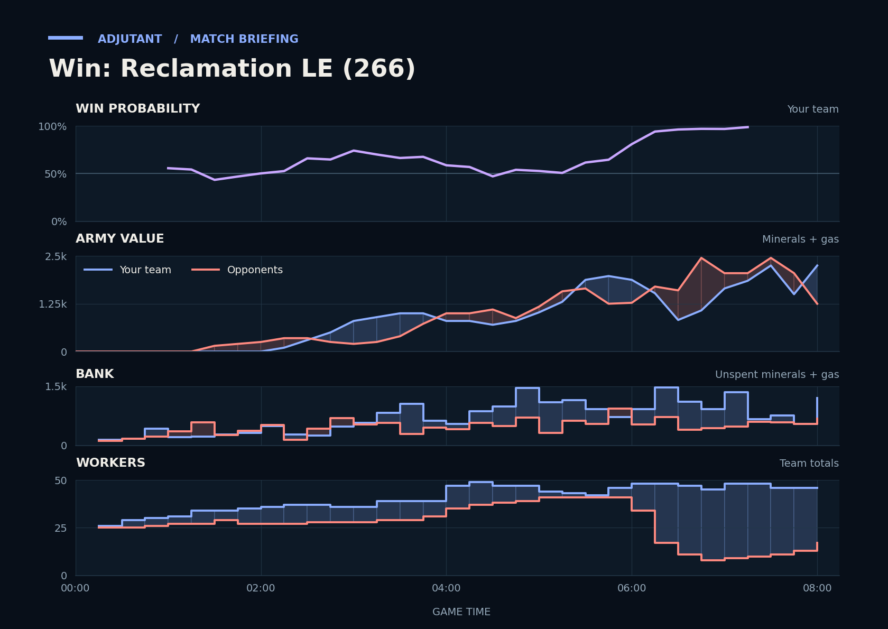

Win: Reclamation LE (266)
Provisional debrief. The full report (timeline, insights and analysis) is being generated.

Cached narration uses different analysis inputs (facts, engine notes, prompts or model settings). It has not been regenerated for this report.
**Win.** In the fight from 5:38 across their bases, your Hellions and Zerglings killed their workers while the armies traded evenly.
**Why**
- 2:25–3:07: Queens, Reapers and Zerglings traded evenly with LGSurge's Zerglings; TakeTheTip's supply block began at 2:58.
- 5:38–6:44: Hellions killed rampantSlag's Probes at their natural; their workers hit a low at 6:38 and trailed the duo's afterward.
- 7:57–8:13: Scallop's Widow Mines and TakeTheTip's Hydralisks killed rampantSlag's Void Rays without losing army, and LGSurge typed gg at 8:09.
Current engine analysis: Win. Review 5:38–6:44: you killed 35 enemy workers (26 of rampantSlag's).